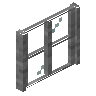

Stone Four Pane Window
mcwwindows:stone_four_window
英文名: Stone Four Pane Window命名空间 ID:
mcwwindows:stone_four_window类型: 方块所属模组: Macaw's Windows资料检索: 🔎 在 MC百科 搜索「Stone Four Pane Window」合成获得 (1)
有序合成Macaw's Windows


原始 JSON
{
"type": "minecraft:crafting_shaped",
"group": "windows_four",
"pattern": [
"AAA",
"ABA",
"AAA"
],
"key": {
"A": {
"item": "mcwwindows:window_centre_bar_base"
},
"B": {
"item": "minecraft:stone"
}
},
"result": {
"count": 8,
"id": "mcwwindows:stone_four_window"
}
}